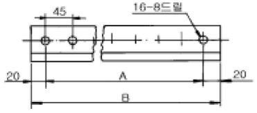
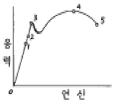
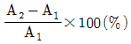
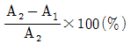
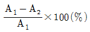
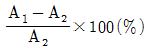
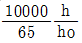

금속재료시험기능사 (2005-01-30 기출문제)
1과목: 금속재료일반
1. Aℓ-4%, Cu-1.5%, Mg-0.5%, Mn의 조성을 가진 합금의 명칭은?
- 실루민
- 초두랄루민
- Y합금
- 하이드로날륨
(정답률: 71%)

2. 소결 초경합금이 아닌 것은?
- WC
- TiC
- TaC
- MnO
(정답률: 61%)
3. 탄화철(Fe3C)의 금속간화합물에 있어서 C의 원자비는?
- 15 %
- 25 %
- 45 %
- 75 %
(정답률: 63%)
4. 주조 상태 그대로 연삭하여 사용하며, 단조가 불가능한 주조 경질 합금 공구 재료는?
- 스텔라이트(stellite)
- 고속도강(高速度綱)
- 퍼멀로이(permalloy)
- 플래티나이트(platinite)
(정답률: 58%)
5. 조밀육방격자 결정구조의 표시가 맞는 것은?
- ABC
- MCC
- FOB
- HCP
(정답률: 85%)
6. 부식에 대한 저항성이 가장 강한 철강은?
- 순철
- 연강
- 경강
- 고탄소강
(정답률: 54%)
7. 침탄(carburizing)재료로 적당한 것은?
- 0.2% 이하의 저탄소강
- 0.7% 의 고탄소강
- 0.8% 의 공석강
- 1.7% 의 탄소강
(정답률: 48%)
8. 금속의 부식에 대한 설명 중 옳은 것은?
- 습기가 많은 대기 중 일수록 부식되기 쉽다.
- 공기 중 염분은 부식을 억제시킨다.
- 이온화 경향이 작을수록 부식이 쉽게된다.
- 황화수소, 염산은 부식과는 관계가 없다.
(정답률: 81%)
9. Al-Cu-Si계 합금으로 Si를 넣어 주조성을 좋게 하고 Cu를 넣어 절삭성을 좋게 한 합금을 무엇이라 하는가?
- 알민 합금
- 로엑스 합금
- 하이드로날륨
- 라우탈
(정답률: 56%)
10. 용융금속이 실제로 응고점(녹는점) 보다 낮은 온도에서 응고가 시작되는 현상은?
- 과냉
- 급냉
- 서냉
- 방열
(정답률: 72%)
11. 용융온도가 가장 낮은 금속과 높은 금속으로 짝지어 진 것은?
- 수은, 텅스텐
- 알루미늄, 망간
- 철, 마그네슘
- 납, 구리
(정답률: 79%)
12. 초경합금으로 이용 될 수 없는 것은?
- WC-Co
- WC-TiC-Co
- TiC-Fe
- Zr-Fe
(정답률: 53%)
13. 합금의 평형 상태도에서 X축 및 Y축은 각각 무엇을 의미 하는가?
- 농도와 온도
- 부피와 중량
- 부피와 크기
- 입도와 중량
(정답률: 63%)
14. 크리프(creep)에 대한 설명 중 맞는 것은?
- 크리프는 2단계에서 속도가 급속해져 파단된다.
- 크리프는 일정 하중 하에서 오랜 시간이 경과되면 강도가 증가하는 현상이다.
- 저용융점 금속, 순금속 및 연한 경금속 등은 상온에서 도 크리프 현상이 일어난다.
- 크리프 곡선은 2단계로 구분 할 수 있다.
(정답률: 40%)
15. 금속적 성질 중 질기고 강한 성질, 충격에 대한 재료의 저항성 이것은 어떤 성질을 나타내는 것인가?
- 전성
- 투과성
- 인성
- 소성
(정답률: 78%)
16. 척도 1/2 인 도면에서 길이 100 mm 인 직선의 실제 길이는?
- 200 mm
- 50 mm
- 25 mm
- 100 mm
(정답률: 69%)
17. 제도 도면에 사용되는 문자의 호칭 크기는?
- 문자의 폭
- 문자의 굵기
- 문자의 높이
- 문자의 경사도
(정답률: 59%)
18. 나사의 일반도시에서 굵은 실선으로 표시되지 않는 것은?
- 수나사의 바깥지름
- 나사부의 골을 표시하는 선
- 완전 나사부와 불완전 나사부의 경계선
- 암나사의 단면 도시에서 드릴 구멍을 나타내는 선
(정답률: 43%)
19. 아래 도형에서 B의 치수는? (단, 치수의 단위는 mm임)

- 315 mm
- 675 mm
- 715 mm
- 360 mm
(정답률: 41%)
20. 부분 단면도에서 단면의 경계를 표시하는 선은?
- 가상선
- 파단선
- 단면선
- 절단선
(정답률: 50%)
2과목: 금속제도
21. 다음 치수 기입의 원칙에 대한 설명 중 틀린 것은?
- 치수는 되도록 주 투상도에 집중한다.
- 치수는 중복 기입을 피한다.
- 관련되는 치수는 되도록 한 곳에 모아서 기입한다.
- 참고치수에는 치수 숫자에 밑줄을 긋는다.
(정답률: 66%)
22. 가공으로 생긴선이 거의 방사상일 때 나타내는 기호는?
- C
- R
- M
- X
(정답률: 38%)
23. SS400으로 표시된 재료 기호를 바르게 설명한 것은?
- 기계구조용 탄소강, 최저인장강도 400 N/mm2
- 기계구조용 탄소강, 탄소 함유량 4 %
- 일반구조용 압연강재, 최저인장강도 400 N/mm2
- 일반구조용 압연강재, 탄소 함유량 4 %
(정답률: 65%)
24. 최대허용치수와 최소허용치수의 차는?
- 치수공차
- 허용한계치수
- 치수허용차
- 위치수허용차
(정답률: 78%)
25. 도면 치수 기입에서 반지름을 나타내는 치수보조기호는?
- R
- t
- X
- π
(정답률: 84%)
26. 핸들이나 바퀴의 암(arm), 림(rim), 리브(rib), 훅(hook) 등의 절단면을 90° 회전시켜 도시하는 단면은?
- 부분 단면도
- 한쪽 단면도
- 절단 단면도
- 회전 단면도
(정답률: 64%)
27. 제도 도면에서 다음 선 중 가장 굵게 긋는 선은?
- 은선
- 중심선
- 절단선
- 외형선
(정답률: 77%)
28. 강철 볼(구)을 시편에 압입하였을 때 압입된 자국의 표면적의 단위 면적당의 응력으로 표시하는 경도는?
- 브리넬 경도
- 로크웰 경도
- 쇼어 경도
- 비커스 경도
(정답률: 58%)
29. KS-B-0801의 4호 인장시험편 규격으로 틀린 것은?
- 표점거리 50mm
- 지름 25mm
- 평형부길이 60mm
- 어깨반지름 15mm이상
(정답률: 27%)
30. 연강의 응력과 연신율에서 비례한계를 나타내는 점은?

- 1
- 3
- 4
- 5
(정답률: 40%)
31. 광내기 연마에 적합하지 않는 연마제는?
- 샌드페이퍼(#100)
- 산화크롬
- 산화철
- 다이아몬드페이스트
(정답률: 44%)
32. 고온금속 현미경의 장치에 해당되지 않는 것은?
- 금속현미경
- 시료가열로
- 진공장치
- 전자총
(정답률: 49%)
33. 전단탄성계수(또는 강성계수)는 어떤 시험으로 측정 할 수 있는가?
- 인장 시험
- 비틀림 시험
- 압축 시험
- 크리프 시험
(정답률: 49%)
34. 강자성체에 적용하는 것으로 보자력의 차에 의하여 경도를 측정 하는 것은?
- 미소경도계
- 자기적 경도계
- 마텐스경도계
- 긁힘 경도계
(정답률: 47%)
35. 한 시험편에 록크웰 경도시험을 여러 번 할 경우, 압입자국들간의 최소 거리(P)와 시험편 가장자리로부터 안쪽거리 (S)을 옳게 나타낸 것은? (단, d = 오목부의 지름)
- P = d 이상, S = 2d 이상
- P = 2d 이상, S = d 이상
- P = 4d 이상, S = 2d 이상
- P = 4d 이상, S = d 이상
(정답률: 48%)
36. 금속의 피로 시험 주의사항 중 틀린 것은?
- 시험편은 편심 등으로 진동이 생기지 않도록 한다.
- 운전 중에는 항상 소리가 나므로 소리에 유의 할 필요가 없다.
- 시험편이 회전되지 않은 상태에서는 하중을 가 하지 않는다.
- 시험편은 부식되지 않도록 보관한다.
(정답률: 82%)
37. 비파괴시험이 아닌 시험법은?
- 초음파 시험법
- 충격 시험법
- 형광 탐상법
- X 선 투과법
(정답률: 81%)
38. 비파괴 검사방법 중 인체상 안전관리에 가장 유의해야 할 시험은?
- 초음파 탐상시험
- 방사선 투과시험
- 자기탐상시험
- 침투탐상시험
(정답률: 84%)
39. 침투탐상시 침투제의 모세관현상을 결정하는 요인이 아닌 것은?
- 점성
- 분해력
- 응집력
- 표면장력
(정답률: 54%)
40. 비파괴 시험에 이용 되는 코발트 60은 무엇을 방출 하는 것인가?
- 알파입자
- 중성자
- 감마선
- β선
(정답률: 56%)
3과목: 금속재료조직 및 비파괴시험
41. 침투탐상 검사에서 건식, 습식, 비습식은 어느 것을 설명하는 것인가?
- 완화제
- 세척제
- 현상제
- 산세제
(정답률: 64%)
42. 강재의 파면검사로 알 수 없는 것은?
- 침탄, 탈탄층의 식별
- 담금질 상태의 적부
- 결정입도 판정
- 기계적 성질측정
(정답률: 45%)
43. 불꽃시험 중 그라인더 사용에 대한 안전사항이 아닌 것은?
- 그라인더 사용시 근로안전 관리규칙을 준수한다.
- 그라인더 사용시 불꽃의 색, 밝기에 관계없이 밝은 장소에서 행한다.
- 그라인더 사용시 보안경을 착용한다.
- 그라인더 사용시 마스크를 착용한다.
(정답률: 74%)
44. 강(steel)의 용체화처리(solution treatment)의 설명이 옳은 것은?
- 균일한 오스테나이트로 한 후 냉각하는 것이다.
- 용융상태로 한 후 냉각하는 것이다.
- δ고용체로 한 후 냉각하는 것이다.
- 펄라이트로 한 후 냉각하는 것이다.
(정답률: 36%)
45. 페라이트에 고용될 수 있는 최대 탄소량은 약 몇 % 인가?
- 4.3
- 2.53
- 0.77
- 0.0218
(정답률: 39%)
46. 금의 매크로 부식액은?
- 피크랄
- 나이탈
- 염화제2철 용액
- 왕수
(정답률: 45%)
47. 강의 현미경 조직검사 중 시멘타이트(cementite)를 판별하기 위해 사용하는 부식제는?
- 황산+알콜
- 암모니아수+불화수소
- 붕산+물
- 피크린산+수산화나트륨
(정답률: 50%)
48. 열처리 작업시 안전에 관한 사항 중 틀린 것은?
- 젖은 손으로 전원스위치를 조작해서는 안된다.
- 화상을 입지 않도록 유의한다.
- 승온 시 급열되게 한다.
- 과열 시켜서는 안된다.
(정답률: 89%)
49. 어떤 재료를 시험하였더니 단면적이 A2 에서 A1로 되었다. 단면 수축율을 구하는 식은?




(정답률: 42%)
50. 초음파 탐상 시험으로 알 수 없는 것은?
- 결함의 위치
- 결함의 거리
- 결함의 조직
- 결함의 크기
(정답률: 63%)
51. 금속 재료를 매크로 조직 시험법으로 파단면을 검사할 때 피로 파단면의 특징적인 모양은?
- 원형의 흰 반점
- 방사상 또는 조개껍데기 모양
- 희미한 가는 선 모양
- 정사각형 모양
(정답률: 54%)
52. 경도(시험)기 종류 중 압입체를 눌렀을 때 생기는 압입 자국으로 경도를 측정하는 것은?
- 마이어 경도기
- 마텐스 경도기
- 쇼어 경도기
- 자기적 경도기
(정답률: 40%)
53. 산세정도로는 식별하기 어려운 미세균열, 백점, 편석등을 확대 검출 할 수 있는 방법은? (단, 염산 50%에 물 50%이 산액 사용함)
- Step-down test
- Picking
- Electro-etch method
- Deep-etch test
(정답률: 39%)
54. 비금속 개재물의 종류가 아닌 것은?
- A계 개재물
- B계 개재물
- C계 개재물
- D계 개재물
(정답률: 60%)
55. X-선 반사조건의 식 2d sinθ=nλ에서 d는 무엇인가?
- 파장
- 각도
- 원자간 거리
- 방사선 종류
(정답률: 52%)
56. 비커스 경도값을 나타내는 식은?
- P/ÅDt
- 1.854×P/d2

- 100-500t
(정답률: 50%)
57. 열처리(담금질 및 뜨임)한 탄소공구강은 무엇으로 경도 측정 하는 것이 좋은가?
- 펜듈럼(pendulum)
- 로크웰(rockwell)
- 샤르피(charpy)
- 크리프(creep)
(정답률: 47%)
58. 방사선 투과 사진의 상질을 평가하는데 쓰이는 게이지는?
- 투과도계
- 침전계
- 서베이 미터
- 현미경
(정답률: 50%)
59. 초음파 탐상 검사의 특징이 틀린 것은?
- 표준 시험편이나 대비 시험편이 필요하다.
- 접촉 매질이 필요하다.
- 고감도로 미세한 결함의 검출이 가능하다.
- 표면이 매우 거칠거나 모양이 불규칙한 것도 탐상이 쉽다.
(정답률: 42%)
60. 현미경 조직시험시 안전수칙 중 틀린 것은?
- 각종 장비의 특성과 안전수칙을 숙지한다.
- 알콜 사용시 화재에 주의한다.
- 화학약품을 사용시 신체에 접촉되지 않도록 한다.
- 폴리싱 작업시 과부하가 걸리도록 한다.
(정답률: 74%)